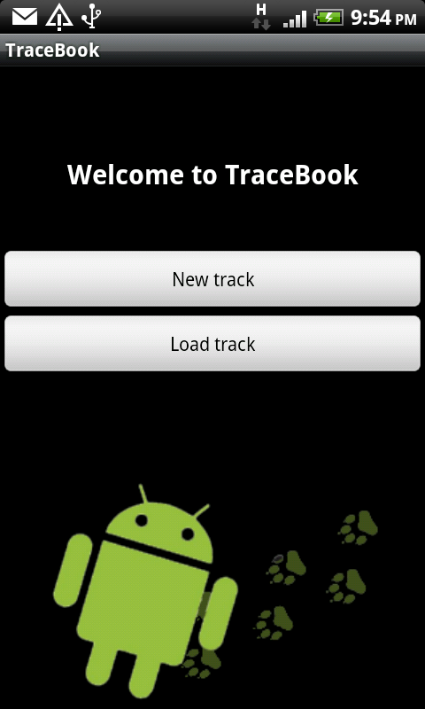
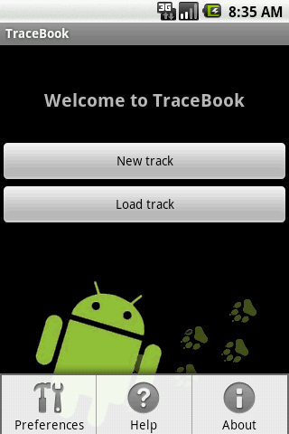

In this activity, the user can start a new track or load one of their previously saved tracks.
Upon starting TraceBook, you can choose to either start a new track or load an existing track.
Furthermore, the option menu offers the possibility to set common preferences, as well as showing some help and information about TraceBook.
